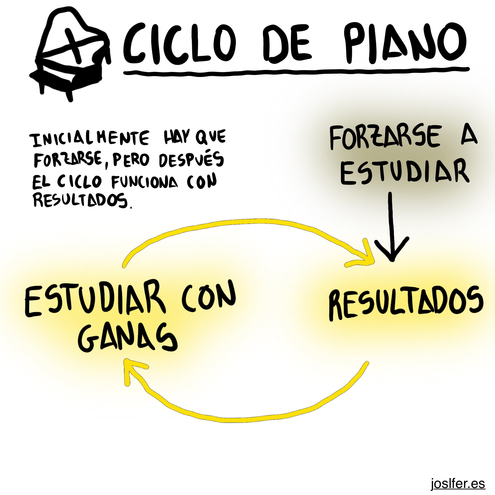
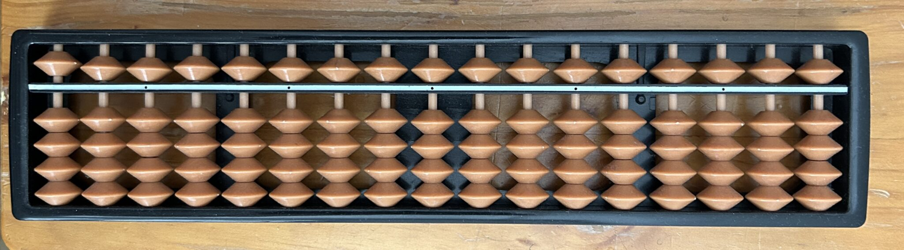
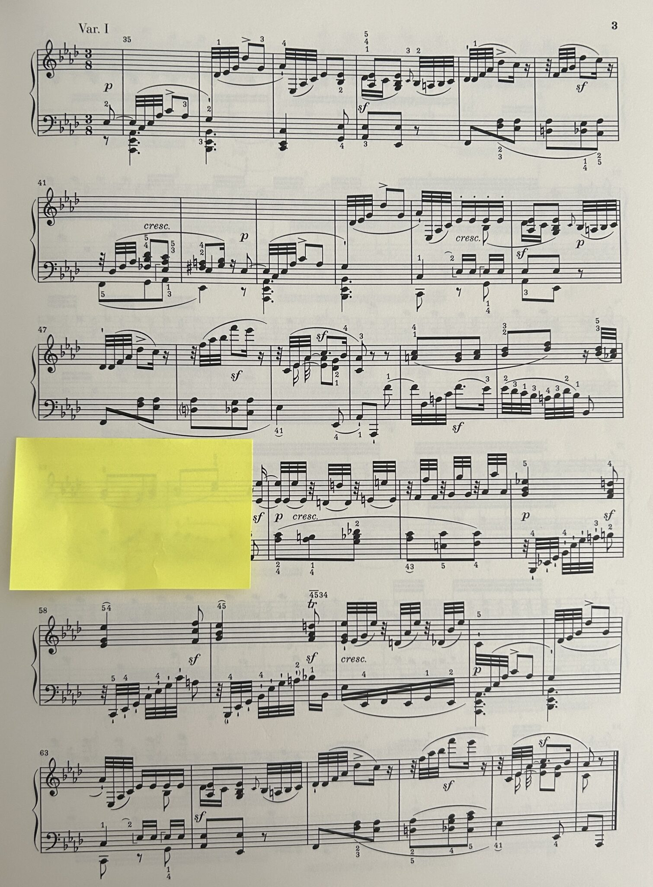

Pocas veces estudio bien, pero siempre que lo hago es porque estoy pensando en algo de esto. Y quería dejarlo escrito, para poder tenerlo cerca. Esto es lo he ido aprendiendo en 10 años.
Una semana puedo estar estudiando un preludio de Bach (BWV 850), y me encuentro con unas notas complicadas y unos dedos que no cuadran. Entonces empieza en mí una vagancia por defecto que hace que estudie mal. Obviamente estudiando mal no hay resultados y me desespero.
Aquí tengo 2 opciones:
¿Cómo conseguir las ganas para trabajar bien? Escuchando que toco y suena bonito. Para eso hay que esforzarse en un primer momento y empezar el ciclo.
esforzarse a estudiar → ver resultados → estudiar con ganas → resultados → estudiar con ganas → resultados…
Lo importante es pensar que el esfuerzo inicial merece la pena, y que no se puede avanzar si se evita.
Así tocar se vuelve:
Dicho eso, todo lo siguiente es parte de cómo estudiar mejor. Estrategias para entrar en el ciclo más rápido.
La manera de estudiar es repitiendo hasta que se quede.
Fijar a partes (importante ——> menos importante) Así me esfuerzo.
Para repetir un sistema lo que hago es pegar un papel en el siguiente para no verlo y no pasarme y seguir tocando sin darme cuenta. Y cuento las veces con un ábaco.
 Mi error más común es intentar abarcar mucho fijando poco, porque así nunca llegas a saber una obra bien, simplemente tienes un esbozo con fallos y errores, entero pero mal.
La clave está en encontrar el equilibrio entre [abarcar VS fijar].
En teoría debería estudiar con muchísimo cuidado cuando leo una obra por primera vez. El problema es que este proceso es como un campo de minas para mí ⌾. Me cuesta bastante leer todo bien a la primera y a menudo no lo hago. Es un ideal al que aspirar pero yo lo encuentro extremadamente difícil.
Muchas veces lo que falla es el nivel de lo que hay que estudiar. Cuando me atasco muchas veces se soluciona prestando atención a cosas más difíciles o partiendo una obra en cachos manejables.
📈 La única variable que hace que una obra salga bien consistentemente es la cantidad de trabajo que se le meta. Esto es duro pero tremendamente liberador porque hace que el piano dependa solo del estudiante. Es simple. (estudias mucho bien – sale ) (estudias menos bien – sale menos). A medida que aumenta mi experiencia, una de las cosas más importantes que me ocurre es que la relación entre estudiar y que salga se va volviendo más fuerte.